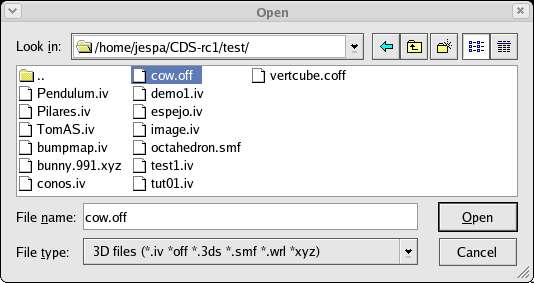
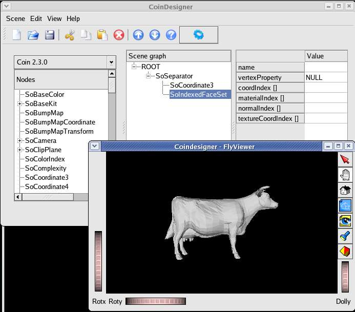
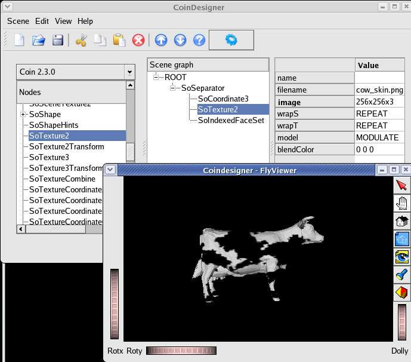
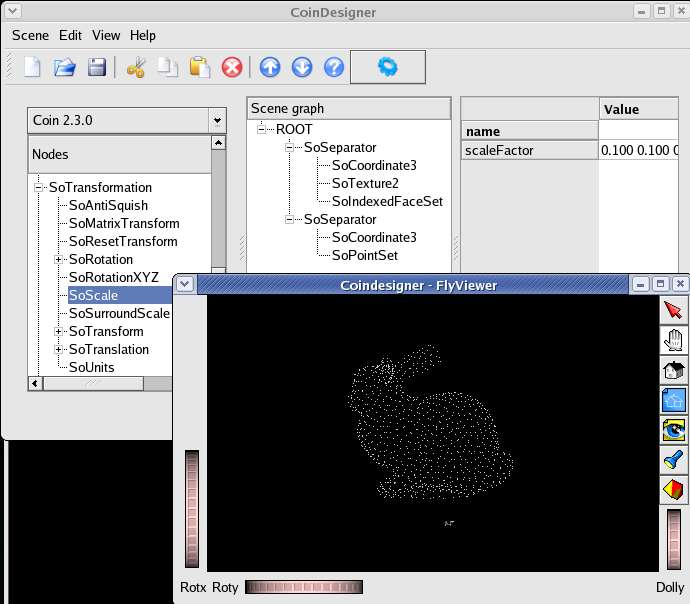
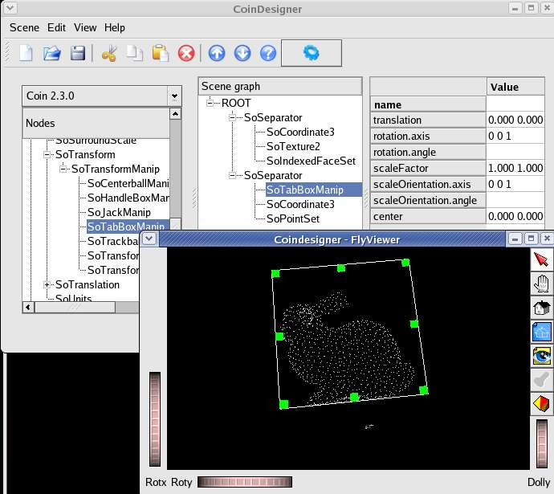
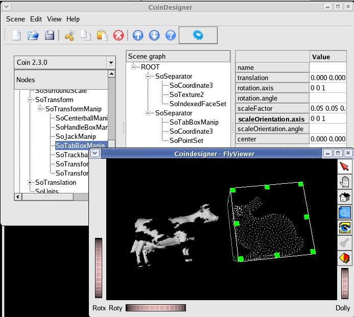
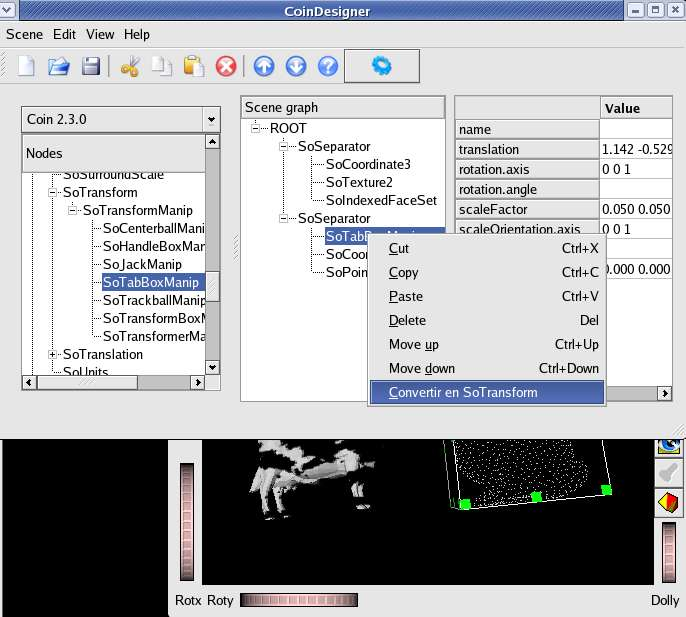
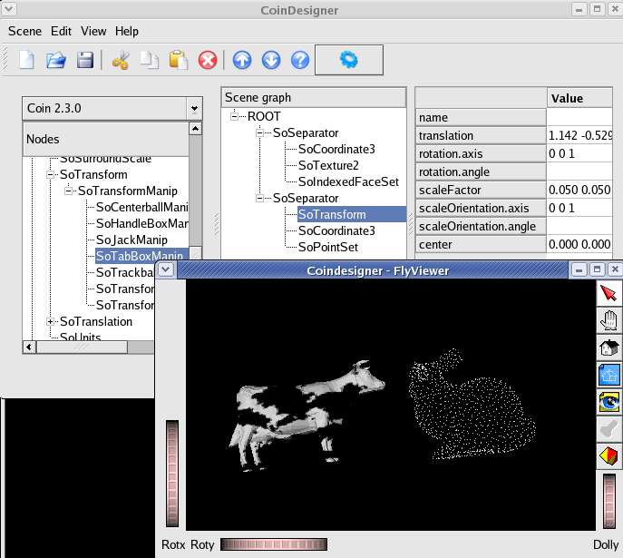
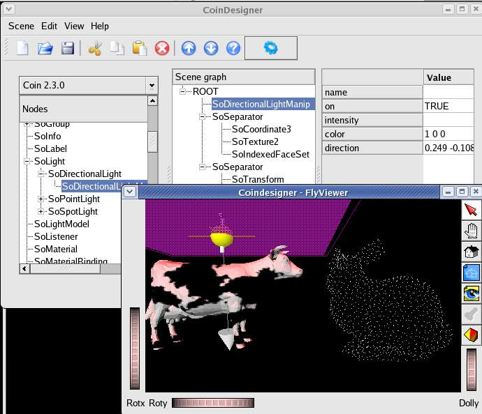
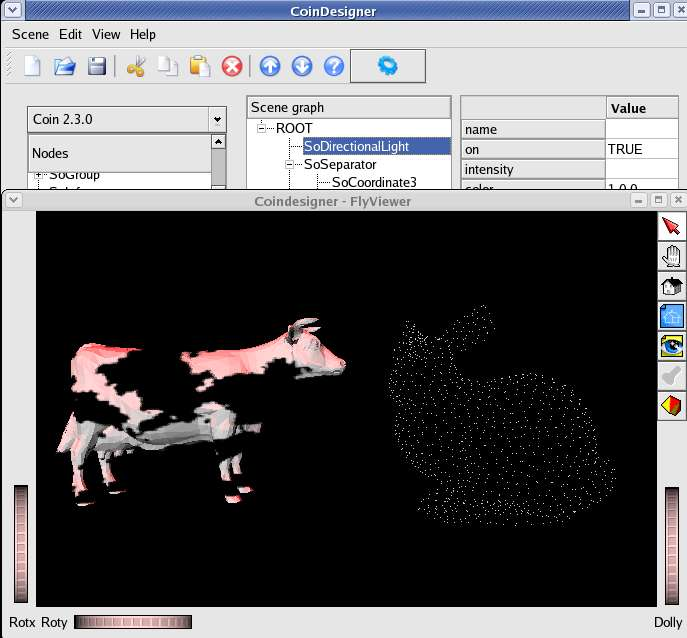

In this tutorial we'll cover the following topics:
- Importing external files
- Using manips
to transform models in a scene
- Using manips
to control the lighting in a scene
Step by step procedure
- We start by selecting option Import
Geometry from the Scene
menu and loading the file cow.off

- As we can see, coindesigner loads the file's content
in a new SoSeparator.

- Imported files can be modified in the same way as
all other inventor nodes. Here,
for example, we've added a SoTexture2
node, applying the texture cow_skin.png
to the imported geometry.

- Now we use the same method to import the file bunny.xyz.
We can see this object is much larger than the cow, so we'll try to reduce
it in size.

- We insert a SoTabBoxManip at the start of
the second file's SoSeparator.

- We reduce it in size (using the corner "handles"
of the SoTabBoxManip), and move
the rabbit to a new position (using the side "handles" of the
SoTabBoxManip), until we've got
our objects placed where we want them.

- Now we right-click with the mouse on SoTabBoxManip
and select the option Convert to SoTransform.

- As we see, the manip
disappears, leaving intact the transformations we've applied to the rabbit.

- To illuminate our scene we add a SoDirectionalLightManip
at the start of the scene, modifying the direction and color of the light
to suit our taste.

- We can convert the soDirectionalLightManip
to a SiDirectionalLight by the same method we used before. We observe
that the red light now only focuses on our objects from above.

|